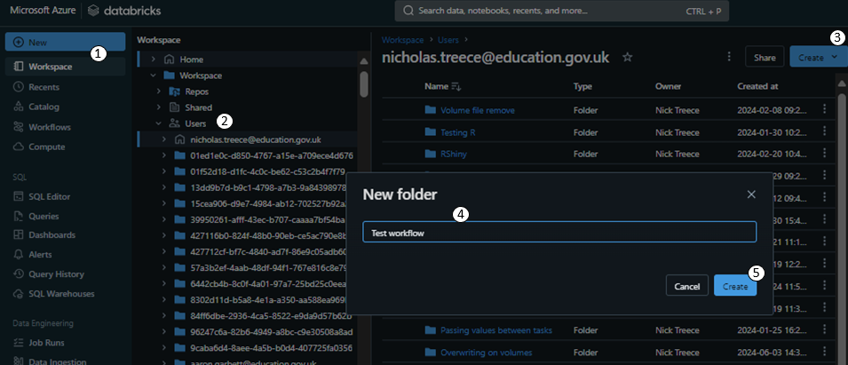

Script workflows in RStudio
Workflows can be constructed through the Databricks Workflows user interface (UI), however for large or complex workflows the UI can be a time consuming way to build a workflow. In these scenarios it is quicker and more inline with RAP principles to script your workflow.
For a pipeline to be built there must be scripts, queries or notebooks available to read by Databricks, either located in your workspace, or in a Git repository.
For this example we will create a folder in our workspace, create two test notebooks to comprise the workflow, and then switch to RStudio to script the job and set it off running. We’ll also set it up to notify us by email when the workflow successfully completes.
Create a folder in your workspace on Databricks to store your notebooks. First click ‘Workspace’ in the sidebar (1), then navigate to your user folder (2). Then click the blue ‘Create’ button (3) and select ‘Folder’. Give the folder a name (4) such as ‘Test workflow’ and then click the blue ‘Create’ button (5).
Once in your new folder and click the blue ‘Create’ button again, this time choosing ‘Notebook’. Once in your new Notebook retitle it to ‘Test task 1’ (1), and set the default language to R (2). Then in the first code chunk write
print("This is a test task")(3).
Create a second workbook in the same folder titled ‘Test task 2’, and in the first code chunk write
print("This is another test task").
Switch to RStudio and in a new script (/ project) install the
devtoolspackage if it isn’t already installed. Then usedevtools::install_github()function to install thedatabrickspackage. Load the newly installeddatabrickspackage.
if(!"devtools" %in% installed.packages()){
install.packages("devtools")
}
devtools::install_github("databrickslabs/databricks-sdk-r")
library(databricks)
library(tidyverse) - Use the
usethis::edit_r_environ()to edit you R environmental variables stored in the.Renvironfile. If it doesn’t already exist create a variable calledDATABRICKS_TOKENand paste in your Databricks access token. Save the.Renvironfile and close it. You’ll then need to restart your session so that the environmental variable is present.
DATABRICKS_TOKEN=<your-access-token>Personal Authentication Token (PAT)s are a unique code that is generated to let Databricks know who is accessing it from the outside. It functions as a password and so must not be shared with anyone.
If you haven’t already generated a Databricks token you can find instructions on how to do so in the Setup Databricks personal compute cluster with RStudio article.
The reason we’re using the .Renviron file here for your access token is that we don’t want to take any risk of someone else being able to view your PAT token. If we were to hardcode it into the script then anyone with access to the code would be able to copy your PAT token and ‘masquerade’ as you.
We can now connect to the API through the
databrickspackage using thedatabricks::DatabricksClient()function. It requires thehostwhich is the URL of the Databricks platform up until (and including) the first/, and your token. We’ll store the result in a variable calledclientas we need to pass this to the other functions in thedatabrickslibrary.
We can then use thedatabricks::clustersList()function to fetch a list of the clusters, which we can view usingView().host <- "https://adb-5037484389568426.6.azuredatabricks.net/" api_token <- dbutils.widgets.get("api_token") client <- databricks::DatabricksClient(host = host, token = api_token) clusters <- databricks::clustersList(client) View(clusters %>% select(cluster_id, creator_user_name, cluster_name, spark_version, cluster_cores, cluster_memory_mb) )Clusters
The
databricks::clustersList()function will return any clusters that you have permission to see.The data returned by the function is hierarchical, and a single ‘column’ may contain several other columns. The
View()function renders a table and as a result flattens the structurein order to see how it is originally structured you can runstr(databricks::clustersList(client)).Make a note of your cluster ID and save it in a variable called
cluster_id. You could automate this step by filtering theclustersdata frame as long as you ensure that it only results a singlecluster_id.cluster_id <- "<your cluster id>"We can now start creating some parameters for the job. Firstly we’ll need a
job_name, and the paths to the Notebooks we’re wanting to include in the workflow. We’ll also need to create a uniquetask_keyfor each of the Notebook tasks we’re going to set up.job_name <- "test job" first_notebook_path <- "/Users/nicholas.treece@education.gov.uk/R SDK/Test Notebook" second_notebook_path <- "/Users/nicholas.treece@education.gov.uk/R SDK/Test Notebook 2" task_key_1 <- "test_key" task_key_2 <- "test_key_2"We can then define the tasks as lists. There are many options available available for setting when creating a task, a full list of which can be found in the tasks section of the job API documentation. When reading this documentation any parameter that is marked as an object needs to be passed as a list (
list()) in R, and anything marked as an array should be passed as a vector (c()).For the first task we’ll give it the first
task_keywe created above, and tell it to run on our existing cluster by passing the ID of our cluster toexisting_cluster_id, we’ll then specify that it is anotebook_taskand pass that a list with thenotebook_pathand thesourcewhich we will set toWORKSPACE(as opposed to a Git repository) for the purposes of this tutorial.
first_job_task <- list(
task_key = task_key_1,
existing_cluster_id = cluster_id,
notebook_task = list(
notebook_path = first_notebook_path,
source = "WORKSPACE"
)
)For the second task we will do the same, but using the second task_key and notebook_path we defined. In addition, we’ll also add a depends_on clause with the previous task_key (passed in a list), and specify it is only to run_if ALL_SUCCESS. This means that the second task won’t begin processing unless all of the tasks it depends_on have completed successfully.
second_job_task <- list(
task_key = task_key_2,
existing_cluster_id = cluster_id,
notebook_task = list(
notebook_path = second_notebook_path,
source = "WORKSPACE"
),
depends_on = list(task_key = task_key_1),
run_if = "ALL_SUCCESS"
)- Now we have both of our tasks defined we can create the job using the
databricks::jobCreate()function. We pass it theclientas the first argument, then the jobnamewe defined. Thetasksare passed as a list which contains each of the task lists we built above.
We’ll also tell it to send usemail_notificationsby passing a list with anon_successvalue of email addresses.
The function returns the ID of the job we just created, so we will want to store the response in a variable calledworkflowso we can refer to it later.
workflow <- jobsCreate(client,
name = job_name,
tasks = list(first_job_task, #list
second_job_task), #list
email_notifications = list(
on_success = c("your-email")
)
)A list() in R is used to contain any number and type of data, including other list()s. This makes it excellent for storing hierarchical data in one place, however it can get quite confusing quite quickly.
Sometimes it’s easier to break these lists() up into pieces by defining them seperately, as we did above by defining the task lists separately then passing them to the tasks argument in the jobsCreate() function.
This often makes it easier to think about and construct, but certainly makes it easier to read. Consider the code below which does exactly the same thing as the code above, but is just written all at once.
workflow <- jobsCreate(client,
name = job_name,
tasks = list(
list(
task_key = task_key_1,
existing_cluster_id = cluster_id,
notebook_task = list(
notebook_path = first_notebook_path,
source = "WORKSPACE"
)
),
list(
task_key = task_key_2,
existing_cluster_id = cluster_id,
notebook_task = list(
notebook_path = second_notebook_path,
source = "WORKSPACE"
),
depends_on = list(task_key = task_key_1),
run_if = "ALL_SUCCESS"
)
),
email_notifications = list(
on_success = c("your-email")
)
)We can see here that the code is getting very long, and is also more difficult to see which options relate to which list. If it weren’t for being diligent with indentation here we’d have to resort to counting brackets to see what belonged where. This is especially problematic if you accidentally delete a bracket and need to work out where it was meant to go.
- We can now get the ID of the job that was created and tell the API to run the job. In a new code chunk we’ll store the
job_idfrom theworkflowvariable above. We’ll then use thedatabricks::jobsRunNow()function to tell it to run the workflow we just created by passing it thejob_idwe just stored. We’ll also store thejob_run_idreturned by thedatabricks::jobsRunNow()function.
job_id <- workflow$job_id
job_run <- jobsRunNow(client,
job_id = job_id)
job_run_id <- job_run$run_idWe will now use this to create links to the job and the specific run of the job we just set off.
Define a
job_linkbypaste0()ing thehostvariable we passed to thedatabricks::DatabricksClient()function earlier, followed by"job/"followed by thejob_iddefined above.
We can then create ajob_run_linkbypaste0()ing together thejob_linkfollowed by"/runs/"then thejob_run_idfrom the previous step.
We can then output thejob_linkas text at the bottom of the cell.job_link <- paste0(host,"jobs/",job_id) job_run_link <- paste0(job_link,"/runs/", job_run_id)You’ve now created a workflow with code, and each time you re-run this scriptanother workflow with the same name will be created. As this is a tutorial which most analysts may have to follow at some point, the logical conclusion is that we will end up with hundreds of ‘test jobs’ cluttering up the workflow page.
To avoid that let’s use thedatabricks::jobsDelete()function to clean up after ourselves. All that we need to do is pass the function theclient, andjob_idvariables from above.jobsDelete(client, job_id)NoteIf you have been running and re-running bits of this code iteratively, there’s a good chance you already have several instances of ‘test job’ listed under your name on the ’Workflows` page in Databricks.
If this is the case we’ll want to clean up each of these, ideally without having to manually click through the UI process for each one.
To do this, firstly call the
databricks::jobsList()function, passing it theclientvariable, and specifying thenameof the jobs you want to list. Then filter the list to just the jobs with acreator_user_nameof your email address. To see the resulting jobs use theView()function as below at the bottom of a code chunk.my_jobs <- jobsList(client, name = "test job") %>% filter(creator_user_name == 'your-email') View( my_jobs %>% select(job_id, creator_user_name, run_as_user_name, created_time) )We can now loop through the individual
job_ids contained inmy_jobsand use thedatabricks::jobsDelete()function to remove them all at once, programmatically.for(job_id in my_jobs$job_id){ jobsDelete(client, job_id) }